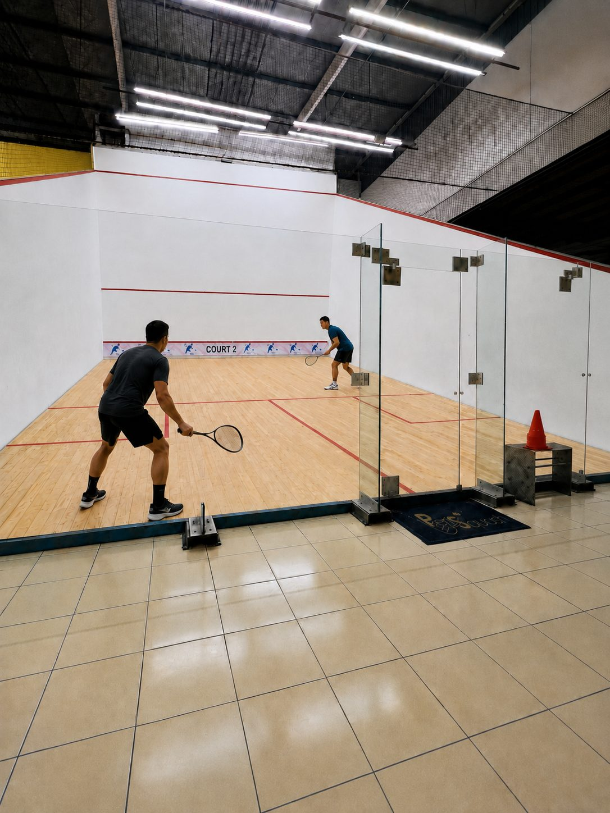
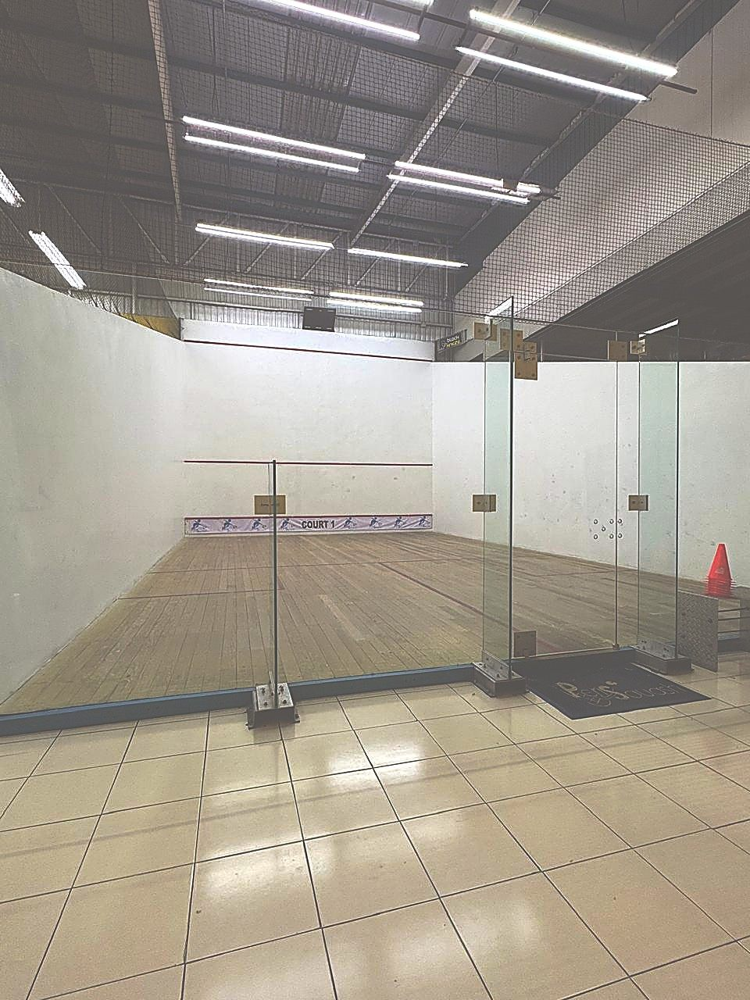
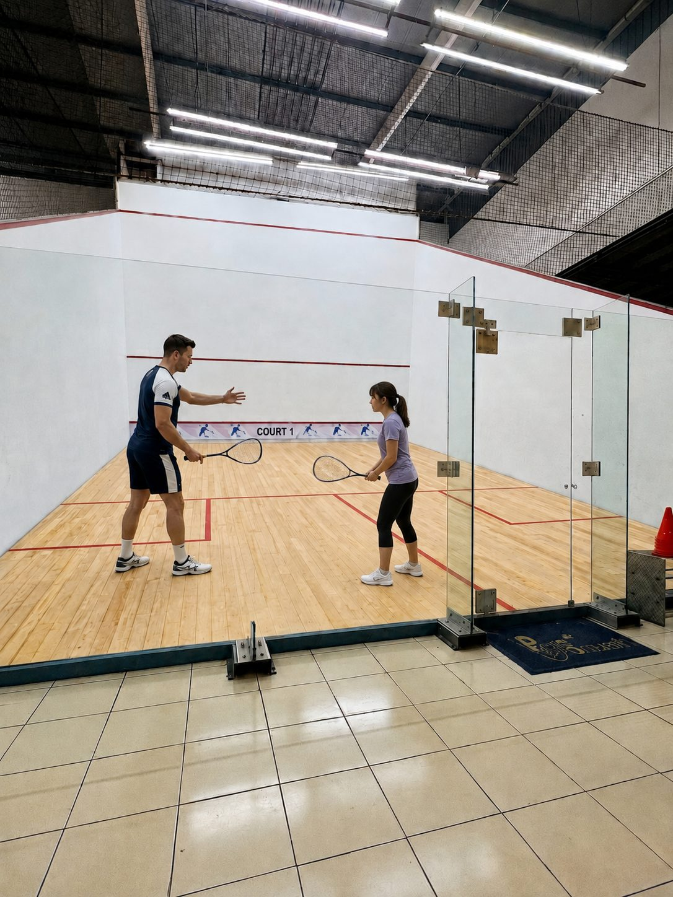
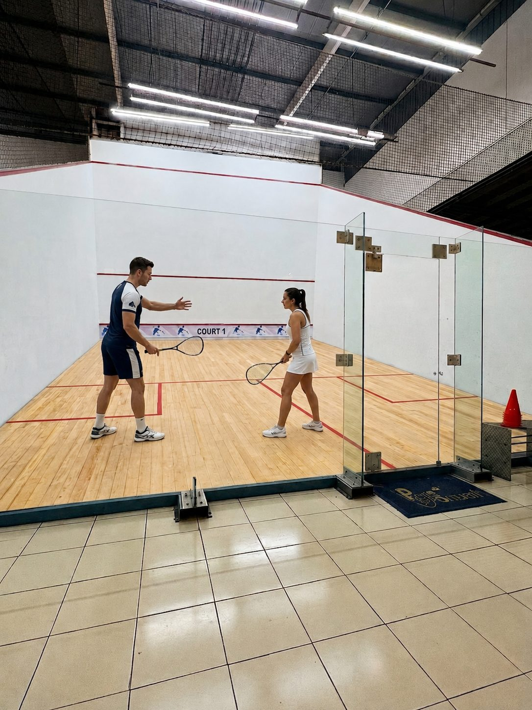

Renta de cancha por hora
Solo o con quien tú quieras. $300 prepagada · $330 casual
Squash en Coapa desde hace 17 años: tres canchas inglesas con piso de duela, contra frontis de vidrio.
Nosotros
Llevamos más de 17 años promoviendo el squash en el sur de la CDMX. Tres canchas inglesas profesionales con piso de duela y contra frontis de vidrio.
Lo que nos distingue no es el lujo: es una excelente atención y una comunidad activa de jugadores de todos los niveles que hace que siempre haya con quién jugar.

Lugar

Solo o con quien tú quieras. $300 prepagada · $330 casual

Competencia informal para medirte con otros jugadores del club. Lunes y miércoles 19:00–23:00 · Domingos 10:00–15:00

Técnica, ritmo y lectura de juego, uno a uno. Principiantes y avanzados. Entrenadores calificados
Torneos

Tienda
Lo que necesitas, sin salir de la cancha.
De las mejores marcas, para cada nivel de juego.
Grips, pelotas, calcetas y bandas.
Servicio en el club, sin vueltas.
Si vas empezando, te prestamos una — sin costo.
Lo práctico
Todo por escrito, sin letras chiquitas. Para reservar solo escribe por WhatsApp.
Se aparta por WhatsApp y se paga al llegar o por adelantado.
Reserva
Elige cancha, día y hora — armamos el mensaje y lo mandas por WhatsApp. Te confirmamos disponibilidad por el mismo medio. Sin cobros en línea.
Galería
Las canchas, los partidos y la gente que las llena. Lo que se vive en el club.




Reseñas de Google
★★★★★
“Canchas con duela de madera y una gran atención al público. Si eres novato, te dan tips para mejorar.”IFF
★★★★★
“Excelente lugar para practicar este deporte. Piso de duela… grandes partidos. Todo en un solo lugar.”Felipe Maldonado
★★★★★
“Las canchas tienen piso de duela y excelente servicio al cliente…”Reseña en Google
★★★★★
“Muy buen lugar y muy buena atención…”Ángel Ramírez
★★★★★
“…Canchas en buen estado. Gran ambiente deportivo.”Luis Ignacio Plascencia
Preguntas frecuentes
PeriSquash está en Vicente Guerrero 7, San Bartolo el Chico, Tlalpan, a pasos del Periférico Sur — a unos minutos de Coapa, Villa Coapa, Coyoacán y Xochimilco. Tenemos tres canchas inglesas profesionales con piso de duela y pared de vidrio.
La hora de cancha cuesta $300 MXN prepagada o $330 MXN casual. Se aparta por WhatsApp al 55 5454 5578 y se paga al llegar o por adelantado.
No. Si vas empezando te prestamos una raqueta de cortesía sin costo, y en el pro shop del club encuentras raquetas, pelotas, grips y servicio de encordado.
Sí. Hay iniciación desde cero y clases particulares de técnica, ritmo y lectura de juego, para principiantes y avanzados. Pregunta horarios y costos por WhatsApp.
Lunes a viernes de 6:00 a 23:00 y sábado y domingo de 7:00 a 15:00. Las retadoras son lunes y miércoles de 19:00 a 23:00 y domingos de 10:00 a 15:00, para jugar contra otros miembros del club.
Ubicación
¿Buscas dónde jugar squash cerca de ti? Nos queda a unos minutos a quien viene de Coapa, Villa Coapa, Tlalpan centro, Coyoacán o Xochimilco, por Periférico Sur o Canal de Miramontes.